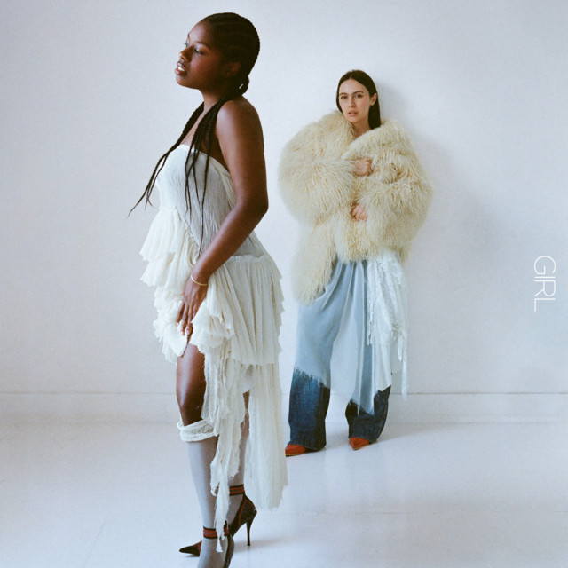
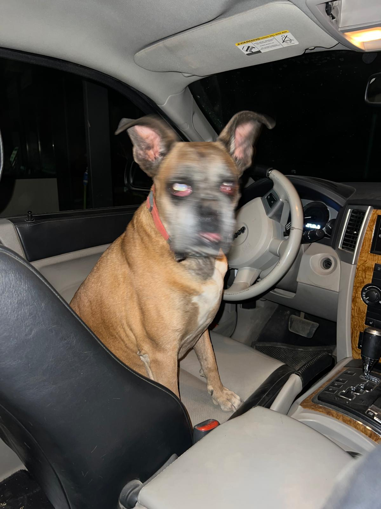
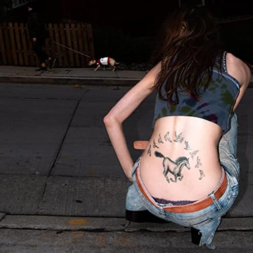
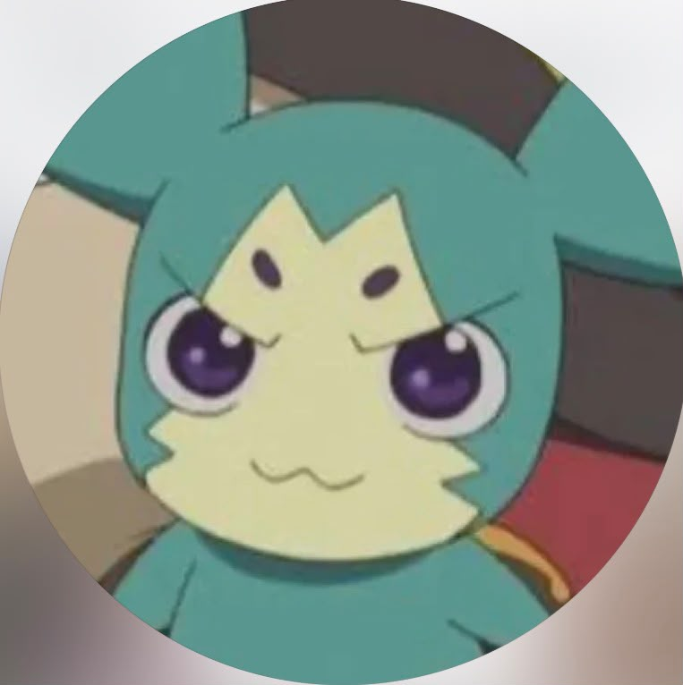
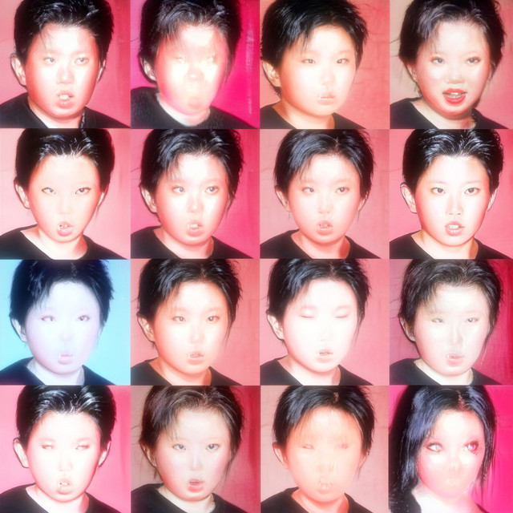
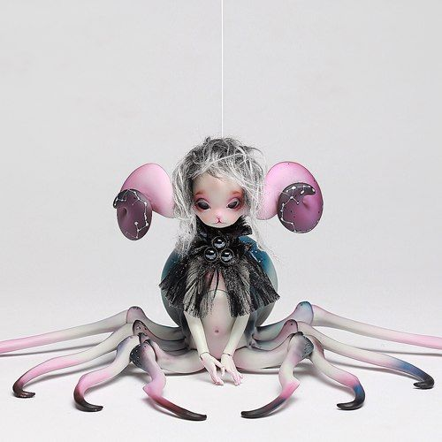
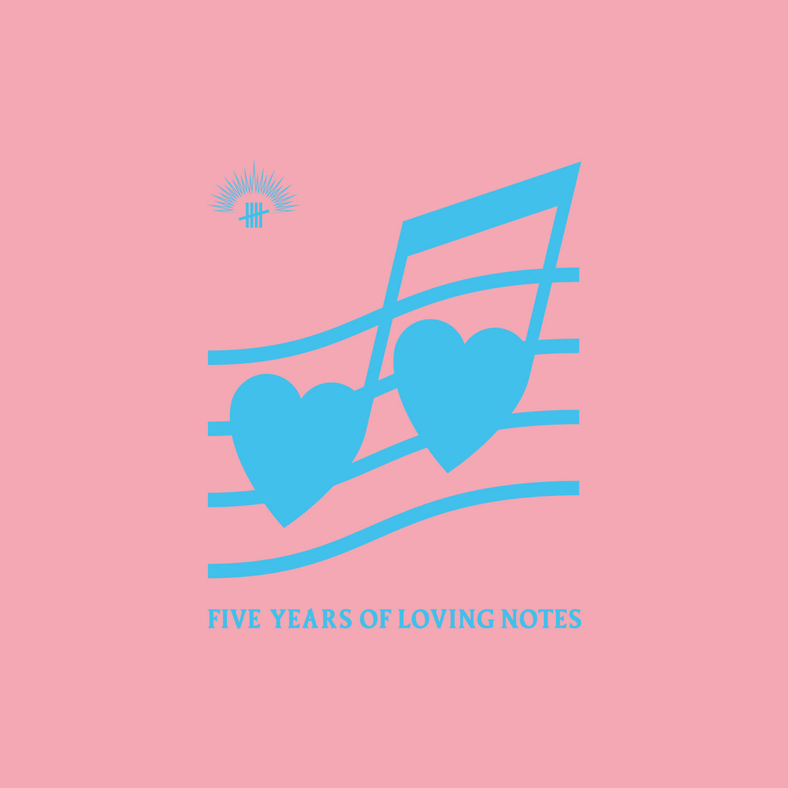

Collectors que te pueden interesar
MC
@mairena.ca
Girl - Coco and Clair Clair
Pop electrónico, sintes brillantes, bajos muy marcados y una mezcla dinámica. Tiene el punto caótico y juguetón de Coco & Clair Clair, pero con temas que se quedan fácil.

●●●●○

@mn.vetor
Vol. 1 - The Hellp
Me encanta lo fresca que suena, con esos beats tan secos y las voces súper procesadas que le dan toda la personalidad. Es caótica, juguetona y tiene ese punto raro que hace que quiera volver a escucharlo.

●●●○○

@carmen_tdc
Ai love - iuky
Como si estuvieras recordando algo que nunca has vivido. Los sonidos tan digitales y la producción medio glitchy hacen que tenga una atmósfera súper inmersiva. Superloved! es preciosa.

●●●●●

@cd.jedeta
Five Years of Loving Notes - Varios Artistas
El concepto del álbum me parece chulísimo pero el contenido se me hace inconexo.La única que salvo es 芝生の上に de Natsukashi.

●○○○○